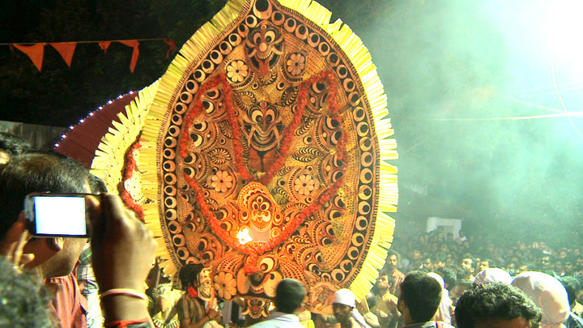
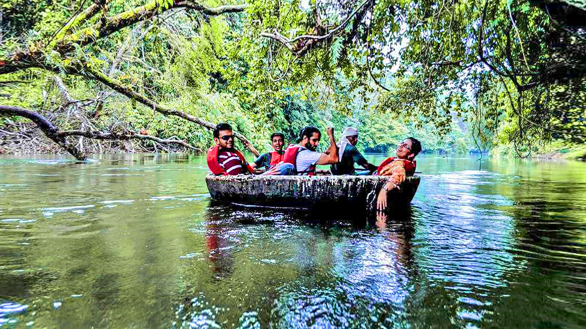
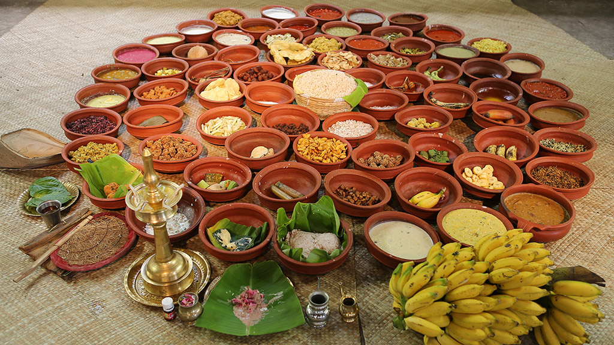

Sabarimala Temple

At Sabarimala devotion blends harmoniously with nature, culture, beliefs, myths, legends and people. This is a unique hill shrine in the Pathanamthitta district of Kerala situated amid the eighteen hills of Western Ghats mountain ranges. A Hindu pilgrimage centre dedicated to Lord Ayyappa, Sabarimala usher in 40 to 50 millions of devotees every year not only from the southern states but also from north India.For the devotees it is the place where Lord Ayyappa meditated after killing the demoness Mahishi. It is also believed that the idol was consecrated by Lord Parashurama. The temple of Ayyappa is situated on top of the Sabari hill at an altitude of 468 metres above sea level.The origin and development of the pilgrimage refuse to be confined in the scribbled pages of history. The temple remained hidden in the deep forests for centuries It is said that the original path was rediscovered by a king.
Gavi Eco-Tourism

Gavi Eco-Tourism , a project of the Kerala Forest Development Corporation, has caught the attention of tourists for a while now. The project is exclusive in many respects and the majority who visited were nature lovers and adventure tourists. Over a short period of time visitors to Gavi gradually increased, especially after 'Alistair International' the world acclaimed tourism major listed it among the leading eco-tourism centres and one of the must-see places in India.The place is rich in flora and fauna. There are hills and valleys, tropical forests, sprawling grasslands, sholas, cascading waterfalls and cardamom plantations. Endangered species including the Nilgiri Tahr and Lion-Tailed Macaque are often sighted at the outskirts of Gavi. With more than 260 species of birds including the Great Pied Hornbill, Woodpecker and Kingfishers, Gavi is literally a paradise for birdwatchers.Some of the breathtaking viewpoints at Gavi like the Valley View offer a spectacular view of the deep ravine and forest below. From Kochu Pampa, a point near Green Mansion eco-lodge, one can track the grazing Nilgiri Tahrs.Gavi is bound to cast its magical spell on every visitor and is surely a place that should not be missed in one's lifetime. Gavi is pristine, and it belongs to the wild, which is a reminder that visitors are responsible for their intentions and actions, which will have a bearing on the upkeep of Gavi for a long time to come.
Kadamanitta Padayani
The Kadammanitta Devi Temple is famous for the ten-day long Patayani performances held in connection with the annual festival in April/May. Kadammanitta is famous for the Patayani performance at the Devi temple here, which is a burst of colour, energy and passionate devotion. The festival is celebrated every year from the first day of Malayalam month medam to the 10th day, called the pathamudayam.The celebration begins by lighting a sacred lamp from the temple – a ritual called chootu vaipu, which is followed by the drumming of traditional percussions thappu and chenda. The following nine days are marked by lively processions in which the artists donning life-size masks, resembling mythological characters perform on traditional Padayani songs. The vibrant masks are an intricate craftwork made of areca spathes and palm leaves arranged creatively.Main attraction of the festival is the eighth day when the various kolam performances- a Ganapathi Kolam, four Marutha Kolams, one Kalan Kolam, eight Yakshi Kolam, Kanjiramala and Bharavi Kolams, are scheduled together. These theatrical musings also have comical interludes with, Pradeshi being the most famous. The festival also incorporates some unique traditions like mounting a Palmyra tree and pushing it down after performing some rituals on the sixth day. The ceremonial dance-Padayani, performed at the festival is a traditional folk dance and a ritual art unique to the former kingdom of Travancore. This flamboyant art form is often regarded as a remnant of the Dravidian forms of worship that existed before the advent of Brahmanism in the state.
Konni-Adavi Tourism
With a 5-km stretch broadened by the Kallar River, Adavi welcomes you to experience nature at its best. The Adavi Eco-tourism project part of the third phase of Konni Eco-tourism project is jointly launched by the departments of Forest and Tourism. The hauntingly beautiful Adavi is known for its coracle rafting or the bowl boat riding – the first of its kind in Kerala. Rowing through the emerald ripples lets you watch the riveting forest patch in its full glory. The lush green ambience is enhanced by the musical notes of birds. The coracle offers long and short rides with the long ones being preferred by those who seek adventure.One of the most prominent elephant training centres in God’s Own Country is situated in Konni near Adavi. The giant wooden cages (Anakkoodu) used to house the elephants are also a main attraction of the place. So make sure you drop by to meet the gentle giants up close.
Aranmula Vallasadya
Vallasadya is a ritualistic feast, done as a vazhipadu (offering) by the devotees to Lord Krishna, the presiding deity at the Sree Parthasarathy temple.The devotee who offers the vazhipadu invites the crew of the snake-boat or Palliyodam of his choice to partake in the Vallasadya. Each snake-boat represents a region close to the village of Aranmula. The feast is held in the outer quadrangle of the Sree Parthasarathy temple, inside traditional dining halls called Oottupura. In Kerala, Oottupura is part of palace structures and temples used for giving food to people who work there and to the common public on special occasions.As part of the Vallasadya the crew of the selected snake-boat will be accorded a customary reception on their arrival to the temple ghat. They circumambulate the temple, singing Vanchippattu, songs of the boatmen in praise of Lord Parthasarathy, before being led to the temple Oottupura (dining hall) for the feast. As the feast progresses, the guests demand more rice and dishes by singing in the same style as that of Vanchippattu. This generates an ambience filled with fun, hurried activities and a flow of energy that is unique to Vallasadya. As many as 50 to 64 items are usually served during the course of this sumptuous feast.